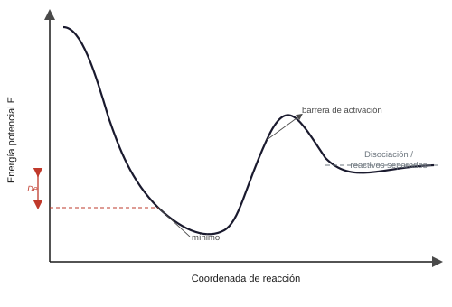
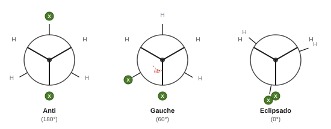
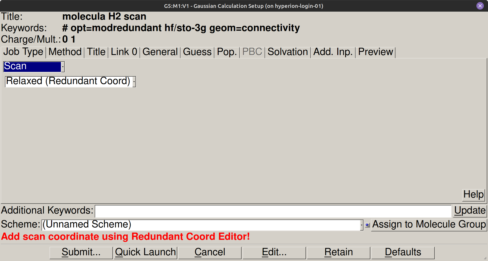
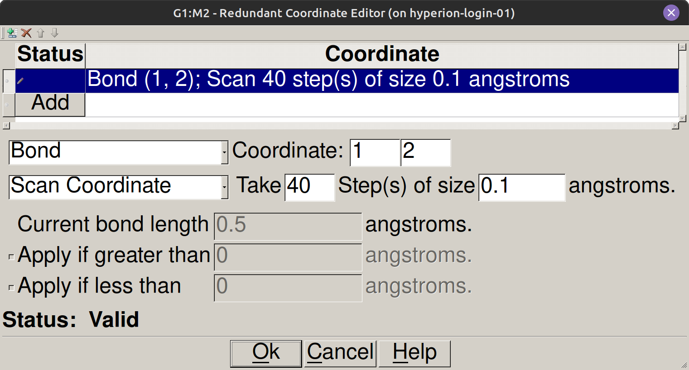

Superficie de energía potencial#
Introducción#
La estabilidad del enlace químico y las preferencias conformacionales de las moléculas dependen de cómo varía la energía electrónica al modificar las posiciones de los núcleos. Gracias a la aproximación de Born-Oppenheimer, estas variaciones pueden representarse como una superficie de energía potencial calculada mediante barridos geométricos sistemáticos en Gaussian. En esta práctica se analiza la curva de disociación de la molécula de hidrógeno para diferentes estados de espín y el perfil energético de rotación del ángulo diedro en derivados halogenados del etano.
Objetivos#
Construir la curva de energía potencial de la molécula de \(\text{H}_2\) mediante un barrido de la distancia internuclear \(R(\text{H–H})\) para los estados singlete y triplete con HF/STO-3G.
Determinar la distancia internuclear de equilibrio (\(R_{\text{eq}}\)) y la energía de disociación de \(\text{H}_2\), contrastando los valores calculados con datos experimentales.
Realizar el barrido conformacional del ángulo diedro en dihaloetanos para identificar los confórmeros anti y gauche en la superficie de energía potencial.
Cuantificar las barreras de rotación conformacional evaluando la diferencia de energía frente a las conformaciones eclipsadas.
Conceptos clave#
¿Qué es una superficie de energía potencial?#
Bajo la aproximación de Born-Oppenheimer, la energía electrónica es una función continua de las coordenadas nucleares que define la superficie de energía potencial (SEP) del sistema:
Los mínimos de esta superficie corresponden a geometrías de equilibrio estables, en las que las fuerzas sobre cada núcleo son nulas y cualquier deformación incrementa la energía. Los puntos de silla de primer orden conectan mínimos contiguos y representan los estados de transición de reacciones químicas o cambios conformacionales. A distancias internucleares grandes, la energía potencial alcanza el límite de disociación, donde los átomos dejan de interaccionar entre sí.


Singlete y triplete: por qué importa el espín#
En el estado singlete, los dos electrones de H₂ tienen espines antiparalelos (multiplicidad 1). Esto les permite compartir la misma región del espacio y concentrar densidad electrónica entre los dos núcleos, apantallando su repulsión mutua y estabilizando el enlace covalente en un mínimo de energía a la distancia de equilibrio. En cambio, en el estado triplete los espines son paralelos (multiplicidad 3) y el principio de exclusión de Pauli impide que ambos electrones se sitúen simultáneamente en la región internuclear. Por este motivo, la curva de energía potencial del triplete es puramente repulsiva en todo el recorrido y no presenta ningún mínimo de enlace.
Nota
Desde el punto de vista mecanocuántico, la función de onda espacial del singlete (\(^1\Sigma_g^+\)) es simétrica ante la permutación de electrones, lo que favorece la acumulación de carga internuclear. En el triplete (\(^3\Sigma_u^+\)), la función espacial es antisimétrica y presenta un plano nodal internuclear donde la densidad de probabilidad es nula. Al no haber densidad electrónica que apantalle a los protones, la repulsión internuclear domina a cualquier distancia.
Ángulo diedro y análisis conformacional#
El ángulo diedro describe la rotación relativa entre dos grupos unidos por un enlace simple central y se define a través de los cuatro átomos que forman la secuencia X–C–C–X en un rango de 0° a 360°. En una proyección de Newman, cada conformación queda determinada por este ángulo. La conformación anti (180°) sitúa los sustituyentes más voluminosos en posiciones opuestas, minimizando las repulsiones estéricas y configurando el mínimo global de energía. Los confórmeros gauche (60° y 300°) constituyen mínimos locales con mayor repulsión mutua. Los máximos de la curva corresponden a las conformaciones eclipsadas, cuyo solapamiento determina la barrera de rotación interna.


Procedimiento#
Parte 1: PES de la molécula de H₂#
Paso 1: Dibujar H₂ en GaussView#
Abrir GaussView.
En la paleta flotante de fragmentos, seleccionar el átomo de hidrógeno (H).
Hacer clic en la ventana central 3D para colocar el primer átomo de hidrógeno.
Hacer un segundo clic sobre el átomo creado para generar la molécula diatómica de \(\text{H}_2\) con enlace simple.
Paso 2: Configurar el cálculo de barrido (Scan)#
En la barra de menús de GaussView, acceder a Calculate → Gaussian Calculation Setup.
En la pestaña Job Type, seleccionar la opción Scan y elegir en el desplegable inferior Relaxed (Redundant Coord).
Para definir la coordenada de barrido, acceder a Edit → Redundant Coordinates (o pulsar el botón de edición de coordenadas redundantes).
En el diálogo Redundant Coordinate Editor:
Pulsar el botón Add.
En el desplegable seleccionar Bond e indicar en Coordinate los átomos 1 y 2.
Seleccionar Scan Coordinate en el tipo de acción y fijar los parámetros del barrido (por ejemplo, 40 pasos de tamaño 0.1 Å).
Pulsar Ok para validar la coordenada.
De regreso a la ventana Gaussian Calculation Setup, en la pestaña Method seleccionar:
Método: HF (Hartree-Fock).
Conjunto de base: STO-3G.
Carga:
0.Para el estado singlete: Spin = Singlet (Multiplicity =
1).Para el estado triplete: Spin = Triplet (Multiplicity =
3).
En la pestaña Title, escribir:
H2 scan HF STO-3G.En la pestaña Additional Keywords, escribir:
scan.
Parámetro |
Estado singlete |
Estado triplete |
|---|---|---|
Method |
HF |
HF (ROHF) |
Basis Set |
STO-3G |
STO-3G |
Charge |
0 |
0 |
Multiplicity |
1 |
3 |
Rango de distancias |
0.5 a 4.0 Å |
0.5 a 4.0 Å |
Incremento de paso |
0.1 Å (35–40 pasos) |
0.1 Å (35–40 pasos) |




Paso 3: Guardar y lanzar los cálculos#
En la ventana Gaussian Calculation Setup, pulsar el botón Submit.
Guardar el archivo del singlete con el nombre:
H2_singlete_scan.gjfen la carpeta de trabajo{{practicas_folder}}PES/.Confirmar el diálogo para iniciar el cálculo.
Repetir el proceso modificando la multiplicidad a 3 y guardar como:
H2_triplete_scan.gjf.Comprobar que ambos cálculos progresan en la barra de ejecución.
Paso 4: Visualizar la PES en GaussView#
En GaussView, abrir el archivo
H2_singlete_scan.logmediante File → Open.Acceder al menú Results → Scan.
Aparece una gráfica bidimensional interactiva con la energía frente a la distancia \(R(\text{H–H})\).
Abrir simultáneamente el archivo
H2_triplete_scan.logpara superponer la curva del triplete sobre la del singlete en la misma ventana de visualización.Observar la forma de pozo de potencial en la curva singlete y la ausencia de pozo en la curva triplete.
Parte 2: PES diedro del dihaloetano#
Se realizará el barrido conformacional para los tres dihaloetanos siguientes: 1,2-dicloroetano, 1,2-dibromoetano y 1,2-diyodoetano. El procedimiento es idéntico para los tres; repetirlo cambiando únicamente el halógeno en el paso de construcción molecular.
Paso 1: Dibujar el dihaloetano en GaussView#
Abrir una nueva ventana en GaussView (File → New → Molecule Group).
Construir la molécula de dihaloetano seleccionando la cadena carbonada y sustituyendo dos átomos de hidrógeno por halógenos en carbonos vecinales.
Aplicar una limpieza geométrica preliminar mediante Edit → Clean.
Paso 2: Configurar el cálculo del barrido diedro#
Acceder al menú Calculate → Gaussian Calculation Setup.
En la pestaña Job Type, seleccionar Scan.
Definir la coordenada interna de tipo Dihedral seleccionando los cuatro átomos enlazados: \(\text{X–C–C–X}\).
Especificar los parámetros angulares del barrido:
Coordenada: diedro \(\text{X–C–C–X}\).
Rango angular: 0° a 360° (pasos de 10° o 15°).
En la pestaña Method, configurar:
Método: HF.
Conjunto de base: STO-3G.
Carga:
0.Multiplicidad:
1(Singlete).
En la pestaña Title, escribir:
Dihaloetano diedro scan HF STO-3G.
Paso 3: Guardar, lanzar y verificar#
Guardar el archivo como
dihaloetano_scan.gjfen{{practicas_folder}}PES/.Confirmar el envío del cálculo pulsando Submit.
Paso 4: Visualizar la curva diedro en GaussView#
En GaussView, abrir el archivo de salida del barrido mediante File → Open.
Acceder al menú Results → Scan.
Identificar los mínimos locales (confórmero gauche) y el mínimo global (confórmero anti a 180°), así como las barreras rotacionales intermedias.
Bibliografía#
Gaussian 16, Revision A.03, M. J. Frisch, G. W. Trucks, H. B. Schlegel et al., Gaussian, Inc., Wallingford CT, 2016.
Atkins, P.; De Paula, J. Química Física, 10ª ed.; Editorial Médica Panamericana, 2018. Cap. 11 (Estructura molecular y superficies de energía potencial).
Clayden, J.; Greeves, N.; Warren, S. Organic Chemistry, 2ª ed.; Oxford University Press, 2012. Cap. 18 (Conformational analysis).
Szabo, A.; Ostlund, N. S. Modern Quantum Chemistry. Dover, 1996.
Para ir más lejos (opcional)
Como actividad opcional, repetimos el barrido conformacional del etano (\(\text{CH}_3\text{-CH}_3\)) con el mismo nivel de teoría. La barrera de rotación calculada, próxima a 3 kcal/mol, es notablemente inferior a la del dihaloetano. La comparación directa de ambos perfiles muestra cómo el volumen del sustituyente, la polaridad del enlace C–X y la electronegatividad del halógeno desplazan los mínimos de energía y elevan la barrera rotacional.